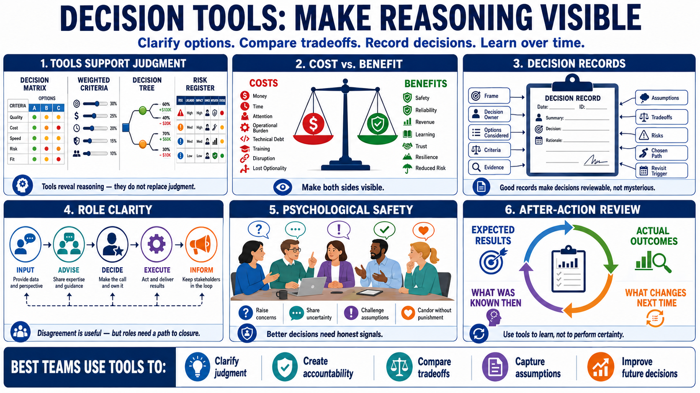

Decision Tools and Team Decisions
Connecting to LMS... Progress: in progress

Narration
Decision tools help teams make reasoning visible. A decision matrix compares options against criteria. Weighted criteria show which factors matter more. A decision tree maps choices, uncertain events, and possible consequences at a high level. A risk register captures risks, likelihood, impact, owners, mitigations, and status. These tools are useful when they support judgment rather than replace it.
Cost-benefit thinking helps teams compare what an option requires against what it is expected to produce. The cost is not only money. It can include time, attention, operational burden, technical debt, training, disruption, and loss of optionality. Benefits can include safety, reliability, revenue, learning, trust, resilience, or reduced risk. Good analysis makes both sides visible.
Decision records are especially valuable in technical and operational environments. A good record captures the frame, decision owner, options considered, criteria, evidence, assumptions, tradeoffs, risks, and the reason for the chosen path. It also records what would cause the decision to be revisited. This makes decisions reviewable instead of mysterious.
Team decisions need role clarity. People should know who is giving input, who is advising, who is deciding, who is executing, and who must be informed. Disagreement should be welcomed when it improves the decision, but it also needs a path to closure. Psychological safety, in practical terms, means people can raise concerns, share uncertainty, and challenge assumptions without being punished for useful candor.
After-action reviews close the loop. They compare expected results with actual outcomes, examine what was known at the time, and identify what should change in future decisions. The best teams do not use tools to perform certainty. They use tools to clarify judgment, create accountability, and learn over time.